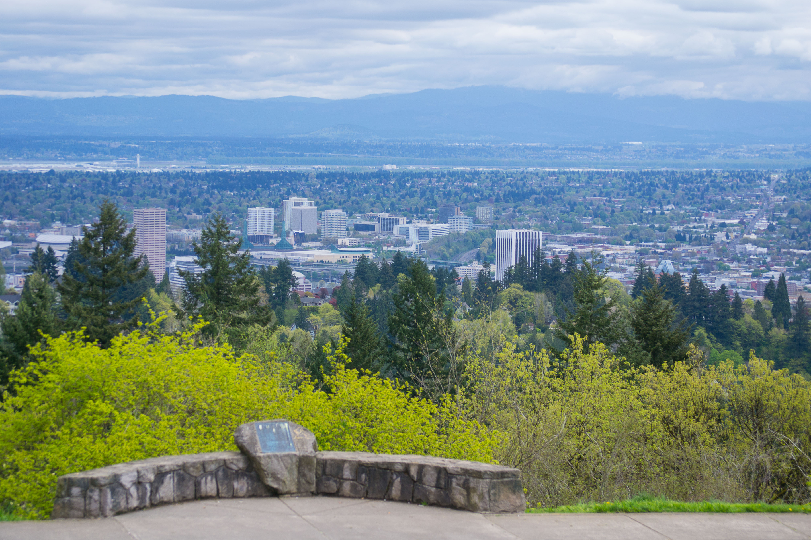

Council Crest
Council Crest is thought to be the highest point in Portland at 1,073 feet above sea level. Originally known as Talbot's Mountain after its pioneer settlers, it has also been known as Glass Hill and later as Fairmount, the name of the road that encircles it. According to legend, Council Crest got its name because it was here where Native Americans held meetings and built signal fires.
Plan Your Trip
Trail Aspects:
- Exertion: Moderate, 3.3 miles round trip
- Sights: Beautiful views of downtown Portland.
- Popularity: High
- Open: All Year
Ammenities:
- Bus Line: 8, 54
Directions From Portland:
- Travel Time: approximately 16 minutes (4 Miles from Portland)
- Get on SW Broadway heading S
- Turn left onto SW Greenway Ave
- Turn right onto SW Council Crest Dr.
- Turn right to stay on SW Council Crest Dr, the destination will be on your left
